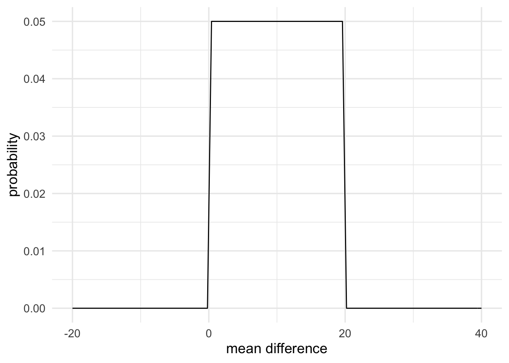

Chapter 7 Choosing priors: Part II

Although the method of using default priors is easy to use some have questioned whether it really makes sense to talk of default hypotheses. The real power of Bayes factors comes from directly testing theories, and as Dienes (2019) points out, “there is no such thing as a default theory, so there cannot be a default” alternative hypothesis. Dienes instead recommends formulating priors for our specific situation at hand. That is, formulating priors that actually match our scientific theories about how the world works.
The second set of priors that we developed for the coin flip examples represents a case of doing this. Instead of saying that our alternative hypothesis should represent each outcome as being equally likely we instead came up with a theory of how biased coins are likely to behave. In fact, we came up with a few theories. One theory, for example, said that biased coins would show heads more often. And another theory said that biased coins would behave similarly to fair coins; however, they would show heads or tails slightly less often than would be expected from a fair coin. We were able to come up with priors that directly represented these theories and we were able to compute Bayes factors comparing these theories with our fair coin theory (that the bias is exactly 0.5).
Of course using these kinds of priors is far more difficult than using default priors because it forces us to think about what our scientific theories predict. However, as scientists, we probably should be thinking about what our theories predict! But knowing what our scientific theories predict is a very difficult task and, as psychology researchers we are not well trained to think in terms of quantitative predictions. This is likely an artefact of the dominance of null-hypothesis significance testing in psychology, because these kinds of statistical procedures encourage thinking in terms of default hypotheses (see Colling & Szűcs, 2020). Therefore, adopting Bayesian methods can require a big change in how we think about theory in psychology.
The aim of this section is not to teach you how to do good theory. Instead, the aim is to give you the tools to test theories once you’ve come up with them. The hope is that once you have the tools, then come up with theories that are testable with those tools. To do this, we’ll look at some examples of how to represent and then test theories with Bayes factors. Following this, we’ll cover some heuristics for coming up with predictions if we’re unsure what our theories predict.
7.1 Examples of representing predictions
7.1.1 Representing predictions with a uniform prior
The most straightforward way to represent the predictions of a theory is with a uniform prior. A uniform prior essentially represents the idea that, if there is an effect, then it will be some value between a defined minimum and a defined maximum, with all effects being equally probable.
Here is an example taken from Dienes (2014). In this example experiment, negative mood was predicted to reduce learning on a task. Learning was measured using a two-alternative forced choice measure (chance performance would be 50%). It was found that, in the neutral mood condition performance on the task was at 70%. If negative mood reduced learning, the population mean of this condition would have to lie somewhere between chance performance (50%) and performance on the neutral condition (70%). Therefore, the difference between conditions would have to be between 0% and 20%.
We could represent this as a uniform prior with a minimum of 0 and a maximum of 20. The code below does just that.
mood_theory <- prior(family = "uniform", min = 0, max = 20)
plot(mood_theory) +
theme_minimal(14) +
labs(x = "mean difference", y = "probability")
Now what do the data say? The results report a mean of 65% in the negative mood condition (mean difference of 5%) with a standard error (standard deviation of the mean difference) of 10. We can represent this data with the code below. Following Dienes (2014), we’ll use a normal likelihood.
data_model <- likelihood(family = "normal", mean = 5, sd = 10)
plot(data_model) +
theme_minimal(14) +
labs(x = "mean difference", y = "likelihood")Finally, we’ll use a null prior of a point at 0 to represent our no effect hypothesis.
null_theory <- prior(family = "point", point = 0)
plot(null_theory) +
theme_minimal(14) +
labs(x = "mean difference", y = "probability")With all the parts in place, we can now compute the Bayes factor.
mood_evidence <- integral(data_model * mood_theory)
null_evidence <- integral(data_model * null_theory)
bf <- mood_evidence / null_evidenceThe resulting Bayes factor is barely different to 1. Therefore, the results don’t really give us a strong reason for favouring one theory over the other.
Sometimes it is useful to have verbal labels for the strength of evidence.
Wagenmakers et al (2017) suggests some verbal labels for strength of
evidence, and we can get the verbal label for the computed Bayes factor by
using the summary function, as shown below.
summary(bf)## Bayes factor
## Using the levels from Wagenmakers et al (2017)
## A BF of 0.8871 indicates:
## Anecdotal evidence7.1.2 Representing predictions with a half-normal prior
A half normal distribution is another useful way to represent predictions for theories. To come up with predictions for the theory, we’ll use the results from an earlier experiment to represent the predictions of the current experiment.
Here is an example taken from Dienes and Mclatchie (2018). In a study by Williams and Bargh (2008), people were ask to feel a hot or cold therapeutic pack and then choose a treat for themselves or for a friend. Of those participants exposed to a cold pack, 75% chose a treat for themselves where only 45% chose the treat for their friend. We can express this difference as an Odds Ratio (OR). This gives an OR of 3.52, which converted into Log Odds (Log OR) is approximately 1.26. We take the natural log of the odds ratio, because the natural log of the odds ratio is approximately normally distributed, which means that we can model it with a normal likelihood.
After the original study, Lynott et al (2014) attempted a replication. Before we get to the data that Lynott et al (2014) obtained, let’s think about a possible prediction.
If the original study reported a true effect, then the replication study should find an effect of roughly the same order of magnitude. Maybe smaller, maybe larger, but not radically different.
Furthermore, it’s also fair to assume that reported effects are usually larger than the true effect, because larger effects are more likely to get published. So the true effect is more likely to be smaller then the reported effect, and less likely to be larger. How might we represent this idea? One way is with a half normal distribution scaled according to the original finding. That is, with a normal distribution centred at 0, and with a standard deviation of 1.26 (that is, the magnitude of the original effect). Furthermore, we’ll limit the distribution to be between the values of \(0\) and \(+\infty\) (because we have a directional hypothesis).
theory_model <- prior(
family = "normal",
mean = 0,
sd = 1.26,
range = c(0, Inf)
)
plot(theory_model) +
theme_minimal(14)By defining the prior in this way, we’re saying that ~68% of the plausible effects lie between 0 and 1.26. And ~95% of plausible the effects lie somewhere between 0 and twice the reported original effect (of 1.26). That is, we predict the effect to be somewhere in the same range as the original study, but more probably smaller than the effect originally reported.
Now that we have our predictions, we can look at the results of Lynott et al’s replication attempt. Their results showed a Log OR of -0.26, with a standard error of 0.14. (Note, that typically, studies don’t report the standard error of the Log OR, but rather report the 95% confidence interval of the OR. However, it’s possible to compute the standard error of the Log OR from the 95% confidence interval, as shown below). As mentioned above, because Log OR approximately follows a normal distribution, we can model it using the normal likelihood, as shown below.
# For completeness, we'll work out the ln OR and
# the standard error from the reported confidence
# interval
reported_or_ci <- c(0.58, 1.02)
log_or_ci <- log(reported_or_ci)
log_or <- mean(log_or_ci)
log_or_ci_width <- abs(log_or_ci[1] - log_or)
log_or_se <- log_or_ci_width / 1.96
data_model <- likelihood(
family = "normal",
mean = log_or,
sd = log_or_se
)
plot(data_model) +
theme_minimal(14)Finally, for our null hypothesis, we’ll just use a point at 0. With all the bit’s in place, we can compute the Bayes factor. The code below is generated using the web-app. However, I’ve just removed the final lines that generate the plots. You can access the web-app’s advanced output at the following link.
# define likelihood
data_model <- likelihood(family = "normal", mean = -0.2624623, sd = 0.1440127)
# define alternative prior
alt_prior <- prior(family = "normal", mean = 0, sd = 1.26, range = c(0, Inf))
# define null prior
null_prior <- prior(family = "point", point = 0)
# weight likelihood by prior
m1 <- data_model * alt_prior
m0 <- data_model * null_prior
# take the intergal of each weighted likelihood
# and divide them
bf <- integral(m1) / integral(m0)
# get a verbal description of the Bayes factor
summary(bf)## Bayes factor
## Using the levels from Wagenmakers et al (2017)
## A BF of 0.0411 indicates:
## Strong evidenceThe results show, strong evidence for the null hypothesis over the alternative hypothesis. The results are \(\frac{1}{0.0411}\approx24\) times more likely under our null hypothesis than our alternative hypothesis.
7.1.3 Representing predictions with the normal prior
In the preceding two examples, we had directional hypotheses. This meant that all our priors were truncated at one end at 0. But sometimes we don’t have directional hypotheses. Instead, we might have non-directional hypotheses. If we have non-directional hypotheses then we can use a full normal distribution, rather than one that’s been limited to be between \(0\) and \(+\infty\).
Furthermore, it is also not necessary to have normal distributions centred at 0. We might use a normal distribution centred at some other value to represent the idea that the effect is roughly with in a certain range but with smaller effects being more probable than larger effects. To see how this works, we’ll go through an example in Dienes (2019).
Fu et al (2013) were interested in whether there are differences in learning global and local structure between people in China and the UK, and a reaction time task was used to assess this. The results showed that when it came to global structure, people in China had superior performance relative to people in the UK. The difference between the two groups was 50 ms (with a standard error of 14 ms). However, for local structure learning, the difference was only 15 ms (standard error of 13 ms).
Fu et al (2013) wanted to test the theory that people in China simply scored higher on the learning task (irrespective of global or local features) because of higher motivation levels. If motivation levels were the only cause of the differences then the group difference in the global task and the group difference in the local task should be the same.
As a result, we could use the results from the global task (mean difference of 50 with an standard error of 14) to represent our predictions about the local task. That is, we can use a normal prior with a mean of 50 and a standard deviation of 14, as shown below.
motivation_theory <- prior(
family = "normal",
mean = 50,
sd = 14
)
plot(motivation_theory) +
theme_minimal(14)
And we can use a normal likelihood to represent the data from the local task.
data_model <- likelihood(
family = "normal",
mean = 15,
sd = 13
)Once again, we can use a null model with a point at 0.
Before we compute the Bayes factor, let’s first think about what we’re comparing. We have one theory that says: “People in China score better on a learning task of local features by about the same amount as they outperform people in the UK on a learning task of global features”. And another theory that says: “People in China and people in the UK score the same on a learning task of local features.” The Bayes factor that we compute is going to tell us which of these specific two hypotheses is better supported by the data.
motivation_model <- data_model * motivation_theory
null_model <- data_model * prior(family = "point", 0)
motivation_evidence <- integral(motivation_model)
null_evidence <- integral(null_model)
bf <- motivation_evidence / null_evidence
summary(bf)## Bayes factor
## Using the levels from Wagenmakers et al (2017)
## A BF of 0.2472 indicates:
## Moderate evidenceThe results show moderate evidence in favour of the null theory. That is, relative to our specific motivation theory, the null theory is better supported by the data. The Bayes factors are always specific to the exact two hypotheses that we’re comparing.
If we were to compare different hypotheses then the Bayes factor would be different. Some people find this worrying, but of course it has to be the case! Comparing different hypotheses means asking different questions and therefore we shouldn’t be surprised if we get different answers.
7.2 How do I know what my theory predicts
Again, knowing what our theories predict can be a difficult task. Therefore, Dienes (2019) has come up with some heuristics for thinking about what our theories predict. This paper can be a useful resource for you to turn back to as you come up with your own studies, and develop and test your own theories.
A key aspect of the heuristics that Dienes (2019) outlines is thinking about the maximum possible effect that can be found between conditions or groups. Once we know this maximum possible effect we can use a half-normal prior scaled according to this maximum. Specifically, the standard deviation of the prior is set to half the maximum. This means that ~98% of the plausible effects will lie between 0 and the maximum possible effect.
We can go through an example of this heuristic from Dienes (2019). In the example study, by Balzarini, Dharma, Muise, and Kohut (2019), relationship quality for polyamorous and monogamous relationships was measured on a nurturance scale with rating from 1 to 7. It was predicted the in polyamorous relationships, nurturance scores would be higher.
The monogamous participants rated their partner’s nurturance as 5.85. While the polyamorous participants rated their partner’s nurturance as 5.80. This gave a mean difference of -0.05, and a standard error of 0.11.
What is the maximum possible difference between the two groups? The scale runs from 1 to 7, so the maximum possible score the polyamorous group would be 7. If this group had a mean of 7, then the group difference would be 1.15. Using the heuristic, we can use a half-normal prior with a mean of 0 and a standard deviation of \(\frac{1.15}{2}\). Putting this together with a null hypotheses of a point a 0, and our data model with a normal likelihood of a mean of -0.05 (with a standard error of 0.11), we get the following result.
# define likelihood
data_model <- likelihood(
family = "normal",
mean = -0.05,
sd = 0.11
)
# define alternative prior
alt_prior <- prior(
family = "normal",
mean = 0,
sd = 0.58, range = c(0, Inf)
)
# define null prior
null_prior <- prior(family = "point", point = 0)
# weight likelihood by prior
m1 <- data_model * alt_prior
m0 <- data_model * null_prior
# take the intergal of each weighted likelihood
# and divide them
bf <- integral(m1) / integral(m0)
# get a verbal description of the Bayes factor
summary(bf)## Bayes factor
## Using the levels from Wagenmakers et al (2017)
## A BF of 0.1349 indicates:
## Moderate evidence